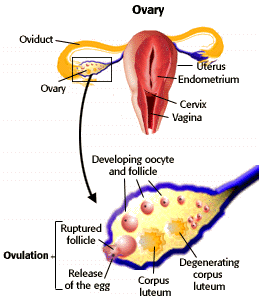

Human Reproduction Problem Set
Problem 9: Ovaries
Tutorial to help answer the question
| Which of the following could be found in the ovary? |
A. oviduct
B. corpus luteum
C. endometrium
D. cervix
E. sperm
Tutorial
Ovarian follicles up to ovulationThe ovaries contain eggs stored in small pockets called follicles. A follicle is an egg cell surrounded by a layer of cells involved in egg maturation. These ovarian follicles are formed in the woman's body before birth.
Following puberty, every month, approximately 12 to 14 days after the first day of menstruation in a "typical" monthly cycle, one of these follicles reaches maturity and is released into the uterine tube in a process called ovulation.
While the ovarian follicles produced estrogen, the corpus luteum produce both estrogen and progesterone. |
 |
Effect of progesterone
| Progesterone is required for maintenance of the endometrial lining of the uterus where the blastocyst is implanted. If the released egg is not fertilized, the uterine lining is sloughed off, completing the monthly uterine cycle. Following the menstrual period, the ovarian and uterine cycles begin anew, with the development of an ovarian follicle, and the preparation of the uterus for blastocyst implantation. |


University of Arizona
Updated: July 15, 1999
Contact the Development Team
http://biology.arizona.edu
All contents copyright © 1996-99. All rights reserved.